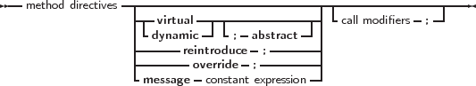

Declaration of methods in classes follows the same rules as method declarations in objects:
_________________________________________________________________________________________________________
methods

___________________________________________________________________
The only differences are the override, reintroduce and message directives.